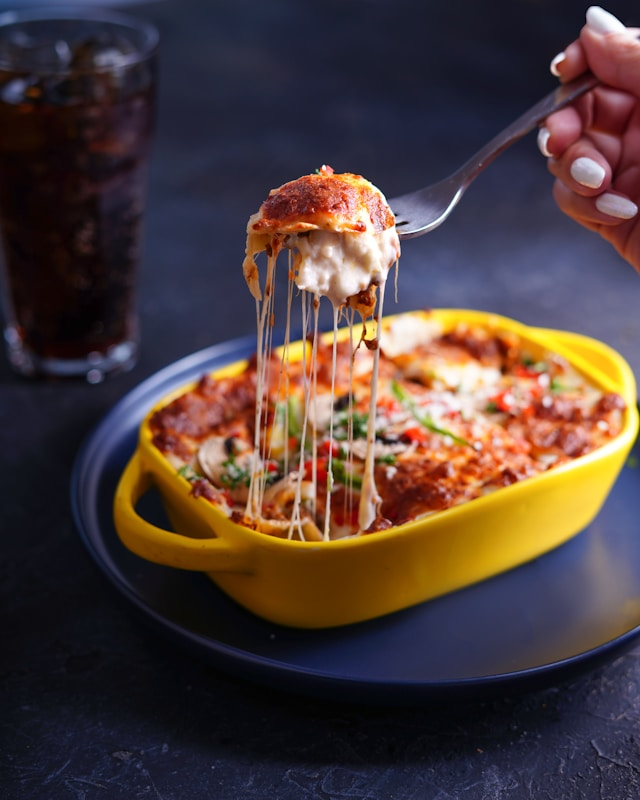

Lasagna

Easy lasagna recipe for lazy cooks
If you love lasagna but can't cook to save your life, I got you! Underneath you will find the easiest lasagna recipe in existence, with exact directions and measurements to recreate it. If you have the ingredients listed below you can have this legendary dish in no time!
Ingredients
- 1 ready made bolognese sauce
- 500gr lasagna pasta
- 1 medium egg
- 100 gr parmesan cheese
- 100 gr ricotta cheese
- a handfull of parsley
Steps
- Add salt to boiling water and boil the pasta according to the box.
- Keep a bit of the cheeses aside. Chop the parsley and mix it well with the rest of the cheese and egg.
- Layer your ingredients in a medium sized ovenproof container.
- Spread about a cup of meat sauce to barely cover the pan. Add a layer of pasta. Top the noodles with some cheese mix.
- Repeat the layers, ending with a layer of noodles and sauce
- Cover with foil and bake for 20 min in 200C.
- Remove the foil and sprinkle the rest of the cheese on top. Bake until the top of the lasagna is golden brown.
Home